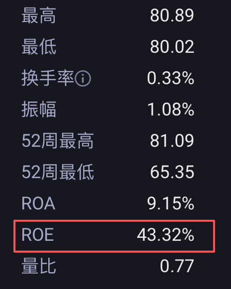
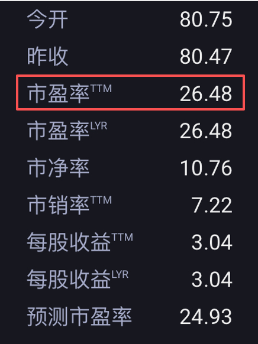

炒股最怕凭感觉买、被市场情绪带偏？ 其实学会估值，就能给股票定一个 “参考锚点”，判断它到底值不值、未来能不能赚，这也是投资和投机的核心区别。
对新手来说，估值不用算复杂公式，也没有绝对 “标准答案”—— 它看似是计算题，实则是结合数据的判断艺术，艺术就是难以估价，每个人都有不同的感知，一千个人眼里一千个哈姆雷特。但掌握基础方法，就能避开大部分盲目投资的坑。今天就分享一套极简估值法，新手跟着步骤走，就能快速判断手中股票的潜力。
一、看赚钱能力
首先我们要明白，为什么股票的未来收益很难精准计算？
就好比你现在想盘下一家小超市，想知道这家小超市以后能给你赚多少钱，应该怎么做呢？
靠货架上的东西值多少钱来算？还是通过你朋友开在距离两条街以外的超市赚了多少钱来算？显然都不准确。
更靠谱的方式，是参考这家超市过去的"赚钱能力"。
这在股市里有一个专门的指标——净资产收益率（ROE），是巴菲特最看重的赚钱能力指标，它体现的是：公司每投入1块钱，能赚回多少利润？直接反映一家公司的赚钱能力和稳定性。
一般来说，一家公司连续5年ROE > 15%，就说明它的赚钱能力比较优秀，而且还很稳定。因为只有某一年的ROE高，有可能是受偶然因素的影响，比如卖资产赚了钱，连续5年更能反映公司真实的经营能力。
如果连续5年ROE超过30%，就是一家非常赚钱的公司了。
这个指标不用自己计算，打开任何股票App，找到财务指标，就可以看ROE。
（如下图👇）

不过ROE评估是是公司过去的赚钱能力，未来赚不赚钱、能赚多少钱，并不一定与过去相同。
就像你的超市，如果换老板了，经营能力不同、赚钱能力也有可能不同；或者是外部环境发生变化，比如超市旁边新开了一所学校，突然增加了很多人流量；或者新开了一个商场，抢走了很多人流量。
公司经营也是一样的，会受到管理层、行业环境、市场变化等因素的影响。这就需要你结合信息搜集能力，判断公司未来的经营趋势。
ROE的核心作用是第一步筛选，定一个自己的标准，比如15%，达到这个标准的公司，再进一步分析是否值得买。
二、看回本速度：判断现在买贵不贵
就算是好公司，如果卖得太贵也很难赚到钱。所以接下来要判断，这家公司的股价，现在买到底贵不贵？
最简单的方法，就是看市盈率（PE），用人话来解释就是：你买这家公司，靠它的净利润，理论上多少年能回本。这个指标也可以在股票app直接查看。
（参见下图👇 看脑袋上挂了TTM的这个更准，TTM是“过去12个月”的意思，反映最新的盈利情况，所以比单一年度的PE要更准确。）

判断标准也很简单，一般来说：
PE＜10：大概率很便宜（除非公司快挂了）；
10＜PE＜20：正常、合理，适合布局；
20＜PE＜30：偏贵，一般是市场对公司有增长预期才会给出这个估值；
PE＞30：很贵，意味着静态年化收益大约只有3.33%（不考虑利润增长），这个收益率跟买国债差不多了，但股票有波动风险，如果公司没有明确的高增长预期，不如买没啥风险的国债；
PE＞50：泡沫区，全靠讲未来故事堆起来，一旦业绩不及预期会大跌。
就像你要盘的小超市，如果30年都回不了本，那拿这钱干点啥不好，咱也不是非得开这个超市。
不过，这个判断标准并不是绝对的，前面说的数值区间用来判断盈利稳定的成熟公司会更准确，比如经营多年的消费老品牌、保险银行股、制造业的龙头企业之类的。对亏损的公司或者盈利大起大落的公司，看PE就没有意义了。
因为各个行业的发展情况不同，PE也会有差异，比如像银行、地产这些传统行业，因为增长慢，合理的PE一般在10倍以内；但是像消费、医药这些增长比较稳定的行业，合理的PE就在20-30倍；科技、新能源等高成长的行业，合理的PE会更高，可能达到30-50倍。
如果不确定怎么判断，有一个偷懒的方法是，你把这家公司的PE直接发给Ai，让Ai帮你判断一下它在行业中处于什么水平。我后面也会讲到一个更准确的判断指标，接着往下看吧。
三、算出股票的真实价值
看完回本速度，接下来可以再用市盈率（PE）倒推一下，就能够估算出公司的合理价值，并且算出它的合理股价，这样就能更清晰地判断出现在的价格高低。
计算公式是：内在价值 ≈ 预估未来3-5年的平均净利润 × 合理的市盈率
举个例子：
假设一家公司现在的股价是：100 元
过去 5 年平均净利润：10 亿，预计未来 5 年平均净利润：15 亿（一般是根据过去5年的平均增长率打一个适当的折扣，为未来的风险变量留下空间）
合理的市盈率：20 倍（优先取公司历史 PE 中位。市盈率要用“无风险收益率倒数”来校准，这是 PE 的理论上限。比如国债收益率 3%，倒数就是 33 倍，合理 PE 不能超过这个数值）
那么就可以估算出这家公司的内在价值大约是：15 亿 × 20 = 300 亿，就是说它未来会成为一家价值300亿的公司。
如果公司总股本是 1 亿股（总股本直接在股票app里查，一般在“公司概况”里），那么合理股价 = 300 亿 ÷ 1 亿 = 300 元
现在股价只有 100 元，远低于 300 元，说明：
现在的价格很可能被低估了，值得重点关注。
四、看性价比：结合增长速度，更准确地判断价格是否靠谱
前面的方法适合成熟公司，如果想分析成长型企业，就需要用到PEG—— 全世界最简单的 “好公司 + 好价格” 筛选指标，能判断公司的估值和增长速度是否匹配。
比如有些公司PE看起来很高，30年才能回本，但它的业绩增长速度极快，实际性价比其实很高，这类公司就适合用PEG分析。
还是拿你的小超市来举例子，这家超市可能以前不太赚钱，要30年才回本，但是它旁边新开发了一个旅游景区，生意一年比一年好，你盘下来以后实际要不了两年就能回本。像这种情况就更适合用PEG分析。
PEG的计算方式是：
PEG = PE（TTM） ÷ 净利润增长率（在股票app里也能查到，最好是看5年的复合增长率）
因为合理的PE≈长期净利润增长率，根据这个原理，就可以得出一个非常简单的判断方法：
PEG＜1：便宜，意味着相对于它现在的价格来说，它的增长速度很快。
PEG＝1：合理，说明价格跟增长速度是基本匹配的。
PEG＞1.5：偏贵，说明回本慢，未来也很难涨起来。
PEG＞2：太贵啦，泡沫。
PEG的计算其实很简单，如果还想偷懒的话，也可以把这支股票的股票代码、PE和净利润增长率都发给Ai，让Ai帮你算，同时让Ai参考行业情况和市场情况，帮你综合判断一下现在是便宜还是贵。
五、在实践中领悟估值的艺术
经过我这么一梳理，是不是感觉估值其实很简单？
但最后还是要再强调一下我在文章开头提到的观点，估值从来不是一道有标准答案的计算题，而是一门需要用实践和认知打磨的艺术。
任何一种估值、判断方法都不是绝对的，看懂数字只是基础，在实际的估值中还有很多需要综合考量、判断的因素。
比如，了解行业：行业是已经饱和了，还是正处于高速成长期。
了解公司在行业中的生态位：它的竞争力到底怎么样，有没有独家技术、品牌壁垒，市占率是在提升还是在下降。
了解政策：行业或公司受政策的影响大不大。
了解经济周期和宏观环境：经济下行、利率上升时，企业盈利会承压，增长率要下调。政策支持、技术突破时，可以适当上调。
多学、多看、多分析，我们的判断才会越来越精准。
如果还有什么不清楚的地方，欢迎在留言区讨论！